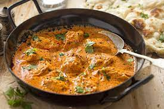

Butter Chicken

Description
Butter chicken also known as Chicken Makhani is a classical indian dish where grilled chicken(tandoori chiken) is simmered in a spicy,aromatic,buttery and creamy tomato gravy.This lip-amacking and delicious dish is hugely popular among the indian food lovers across the world.
Ingredients
Four seving
- 1 tablespoon penut oil
- 1 shallot,fineky chopped
- ¼ white onion,chopped
- 2 tablespoon butter
- 2 teaspoon lemon juice
- 1 tablespoon ginger garlic paste
- 1 teaspoon chili powder
- 1 teaspoon ground cumin
- 1 bay leaf
- ¼ cup plain yogurt
- 1 cup tomato puree
- ¼ teaspoon cayenne pepper(or according to taste)
- 1 pinch salt
- 1 pinch black pepper
- 1 tablespoon peanut oil
- 1 pound boneless,skinless chicken thighs,cut into bite-size pieces
- 1 teaspoon cayenne pepper
- 1 tablespoon cornstarch
- ¼ cup water
Steps
- Heat 1 tablespoon oil in a large saucepan over medium high heat. Saute shallot and onion until soft and translucent. Stir in butter, lemon juice, ginger-garlic paste, 1 teaspoon garam masala, chili powder, cumin and bay leaf. Cook, stirring, for 1 minute. Add tomato sauce, and cook for 2 minutes, stirring frequently. Stir in half-and-half and yogurt. Reduce heat to low, and simmer for 10 minutes, stirring frequently. Season with salt pepper. Remove from heat and set aside.
- Heat 1 tablespoon oil in a large heavy skillet over medium heat. Cook chicken until lightly browned, about 10 minutes. Reduce heat, and season with 1 teaspoon garam masala and cayenne. Stir in a few spoonfuls of sauce, and simmer until liquid has reduced, and chicken is no longer pink. Stir cooked chicken into sauce.
- Mix together cornstarch and water, then stir into the sauce. Cook for 5 to 10 minutes, or until thickened.
Nutrition Facts
Per serving:
- calories,408
- Protein,23.4g
- Carbohydrates,15.6g
- fat,27.8g
- cholestrol 107mg
- sodium,523.4mg
Return to main page